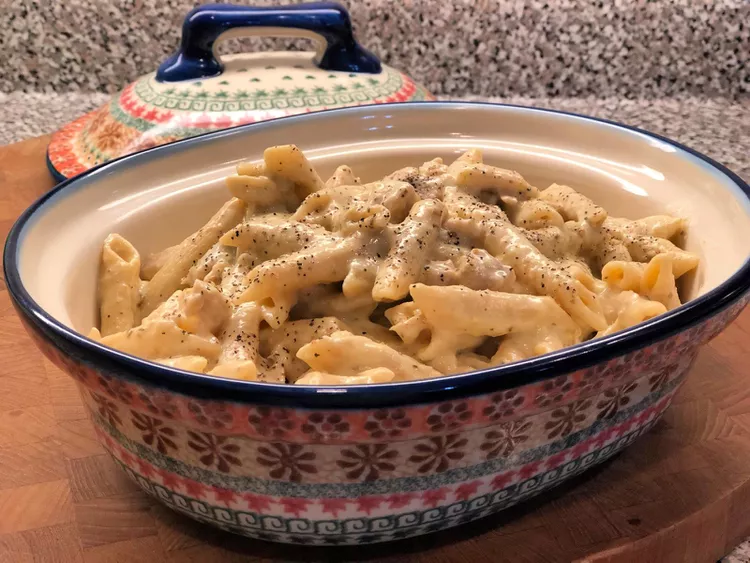

Instant Pot Creamy Chicken and Leek Alfredo

Description
Let's dive head-first into this one-pot pasta dish, full of rich and creamy everything! Your family will love this weeknight dinner, and you'll love how quickly you can make it!
Ingredients
- ½ tablespoon olive oil
- ½ tablespoon butter
- 1 pound chicken breast, cubed
- 1 cup diced leek (white and light green only)
- 2 garlic, chopped, or more to taste
- 1 tablespoon Italian seasoning
- ¼ teaspoon salt
- 1 pinch red pepper flakes
- 1 ½ cups chicken broth
- ¼ cup dry white wine
- ⅔ cup heavy whipping cream
- 1 egg yolk
- 8 ounces penne pasta
- 1 cup shredded Parmesan-Romano cheese blend
- 1 pinch cornstarch
- 1 ounce cream cheese, cubed
- ½ cup milk, or more as needed
- 1 pinch salt and freshly ground black pepper to taste
Steps
- Turn on a multi-functional pressure cooker (such as Instant Pot) and select Saute function. Add oil and butter and heat until butter is melted. Add chicken and cook until lightly brouned on all sides, 5 to 8 minutes. Add leek and garlic. Season with Italian seasoning, salt, black pepper, and red pepper flakes. Cook for 3 to 5 minutes.
- Pour in chicken broth and wine to deglaze pot. Bring to a simmer, scraping browned bits off the bottom of the pot.
- Stir cream and egg yolk together in a small bowl until well combined. Pour into the Instant Pot. Add pasta without mixing, letting it float on top, but making sure pasta does not stick together. You may push pasta slightly down into the liquid. Close and lock the lid and seal the vent. Select high pressure according to manufacturer's instructions; set timer for 1 minute. Allow 10 to 15 minutes for pressure to build.
- Release pressure using the natural-release method according to manufacturer's instructions for 10 minutes. Release remaining pressure carefully using the quick-release method according to manufacturer's instructions, about 5 minutes.
- Mix Parmesan-Romano cheese mixture and a pinch of cornstarch together in a bowl. Unlock and remove Instant Pot lid. Stir in cheese mixture and cream cheese. Slowly add enough milk until the sauce reaches desired creaminess. Mix well to create a smooth cream sauce.
Home